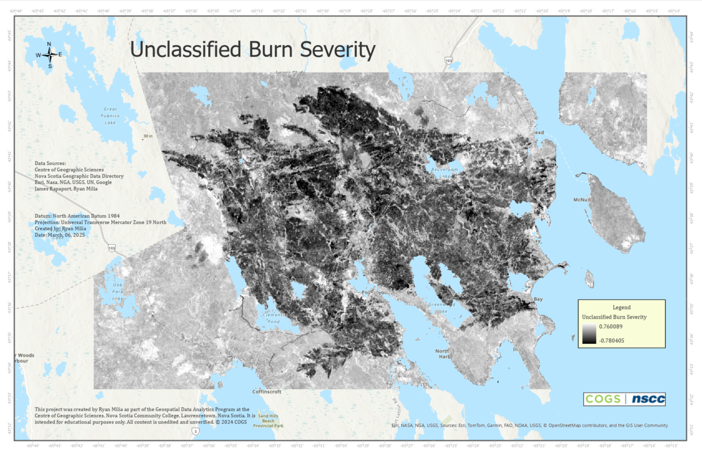
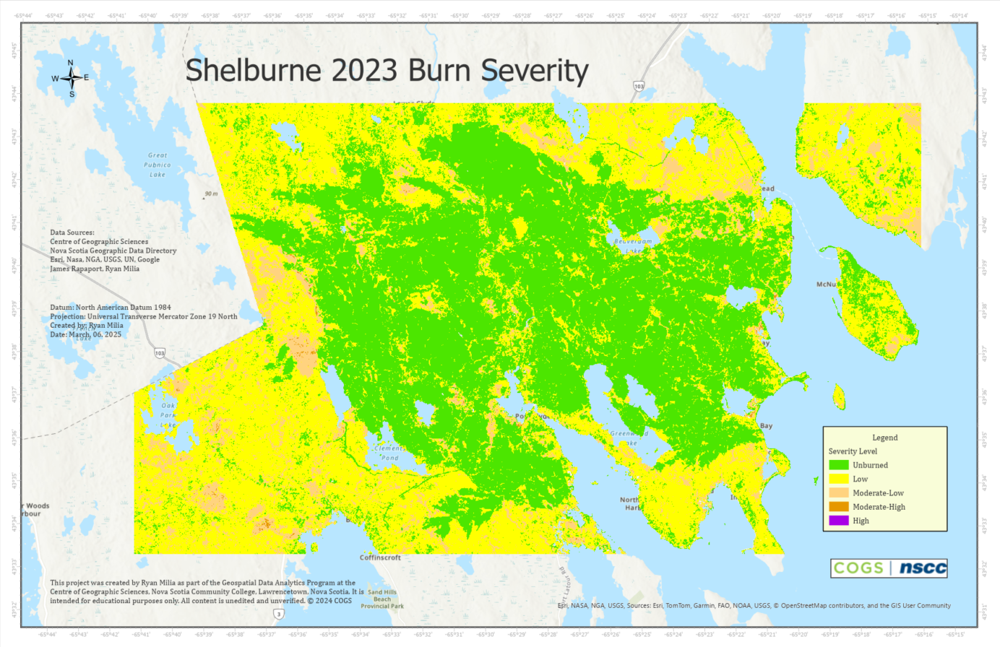

This project analyzes post-fire burn severity following the 2023 Shelburne Fire in Nova Scotia using Sentinel-2 satellite imagery. Key methods include calculating the Normalized Burn Ratio (NBR), generating a differenced NBR (dNBR), and classifying burn severity based on USGS standards. Python was used for image processing, while ArcGIS Pro was used for mapping and final visualization.
"""Burn Severity"""
""" Description:
This module prints a burn severity map based on Sentinel-2 imagery.
- Downloads Sentinel-2 imagery for the specified time and geography.
- Resamples SWIR bands from 20m to 10m resolution.
- Calculates the pre-fire NBR, post-fire NBR, and burn severity.
- Prints a burn severity map based on the NBR calculation.
"""
import pystac_client
import planetary_computer
import rasterio
from rasterio.mask import mask
from rasterio.warp import reproject, Resampling
import numpy as np
from shapely.geometry import box
import geopandas as gpd
# Connect to the STAC catalog
catalog = pystac_client.Client.open(
"https://planetarycomputer.microsoft.com/api/stac/v1",
modifier=planetary_computer.sign_inplace
)
# Define the date range for the fire
start_date = "2023-05-24T00:00:00Z"
end_date = "2023-07-30T23:59:59Z"
# Search for Sentinel-2 images by ID
search = catalog.search(
collections=['sentinel-2-l2a'],
ids=[
'S2B_MSIL2A_20230518T151659_R025_T19TGJ_20230518T234549', # Pre-fire
'S2B_MSIL2A_20230806T151659_R025_T19TGJ_20230806T211758' # Post-fire
]
)
items = search.item_collection()
print(f'{len(items)} items found')
# Define spatial extent (EPSG:32619)
bounds = [767760.0, 4827590.0, 801670.0, 4847040.0]
geom = box(*bounds)
geo = gpd.GeoDataFrame({'geometry': [geom]}, crs='EPSG:32619')
def process_band(item, band_name, meta):
"""Process the image band, reproject to 10m resolution if needed"""
with rasterio.open(item.assets[band_name].href) as band_image:
profile = band_image.profile
src_crs = band_image.crs
band_window = rasterio.windows.from_bounds(*bounds, band_image.transform)
band_window_transform = rasterio.windows.transform(band_window, band_image.transform)
band_data = band_image.read(indexes=1, window=band_window).astype(np.float32)
resolution = abs(band_image.transform.a)
if resolution > 10.0:
band_data_10m = np.empty((int(band_window.height * 2), int(band_window.width * 2)), dtype=band_data.dtype)
profile['transform'] = rasterio.Affine(
a=10, b=band_window_transform.b, c=band_window_transform.c,
d=band_window_transform.d, e=-10, f=band_window_transform.f
)
profile['width'] = band_window.width * 2
profile['height'] = band_window.height * 2
band_data_10m, transform = reproject(
source=band_data,
destination=band_data_10m,
src_transform=band_window_transform,
dst_transform=profile['transform'],
resampling=Resampling.nearest,
src_crs=src_crs,
dst_crs=band_image.crs
)
return band_data_10m, profile
else:
return band_data, profile
# Process both the pre-fire and post-fire SWIR and NIR bands
pre_swir, meta = process_band(items[0], 'B12', None)
pre_nir, _ = process_band(items[0], 'B08', meta)
post_swir, meta = process_band(items[1], 'B12', meta)
post_nir, _ = process_band(items[1], 'B08', meta)
# Compute NBR
def calculate_nbr(nir, swir):
"""Calculate the Normalized Burn Ratio (NBR)"""
return (nir - swir) / (nir + swir)
pre_nbr = calculate_nbr(pre_nir, pre_swir)
post_nbr = calculate_nbr(post_nir, post_swir)
delta_nbr = pre_nbr - post_nbr
output_path = r"C:\Users\ryanj\Desktop\COGS\code\portfolio\burn_severity_analysis\burn_severity.tif"
meta.update({
"dtype": rasterio.float32,
"count": 1
})
with rasterio.open(output_path, "w", **meta) as dest:
dest.write(delta_nbr.astype(rasterio.float32), 1)
print("Burn severity map saved as 'burn_severity.tif'")
"""Masking Water"""
""" Description:
This module masks water from the Landsat-2 derived burn severity map.
- Opens the GeoNOVA dataset.
- Applies a mask to the existing burn severity map.
- Prints a masked burn severity map.
"""
import rasterio
from rasterio.io import MemoryFile
import rasterio.mask
import shapely.ops
import pyproj
import fiona
def filter_features(property: str, value: str, dataset):
return list(filter(lambda f: f.properties[property] == value, dataset))
def transform_features(features, from_crs, to_crs):
transform = pyproj.Transformer.from_crs(from_crs, to_crs, always_xy=True).transform
output_features = []
for f in features:
output_features.append(shapely.ops.transform(transform, shapely.geometry.shape(f.geometry)))
return output_features
def apply_mask(band, features, invert=False):
with MemoryFile() as memfile:
with rasterio.open(memfile, mode='w', **profile) as temp:
temp.write(band)
with rasterio.open(memfile) as temp:
result, _ = rasterio.mask.mask(temp, features, invert=invert, filled=True)
return result
if __name__ == '__main__':
lake_filename = r'C:\Users\ryanj\Desktop\COGS\code\portfolio\burn_severity_analysis\water\WA_POLY_10K.shp'
county_filename = r'C:\Users\ryanj\Desktop\COGS\code\portfolio\burn_severity_analysis\county\County_Polygons.shp'
input_filename = r'C:\Users\ryanj\Desktop\COGS\code\portfolio\burn_severity_analysis\burn_severity.tif'
output_filename = r'C:\Users\ryanj\Desktop\COGS\code\portfolio\burn_severity_analysis\masked_burn_severity.tif'
with rasterio.open(input_filename) as burn_severity:
burn_severity_crs = burn_severity.crs
profile = burn_severity.profile
with fiona.open(county_filename) as county:
shelburne = filter_features('NAME', 'Shelburne', county)
mask_county = transform_features(shelburne, county.crs, burn_severity_crs)
with fiona.open(lake_filename) as lake:
lakes = filter_features('FEAT_DESC', 'Lake Water polygon', lake)
lakes.extend(filter_features('FEAT_DESC', 'Coast River Water polygon', lake))
mask_lakes = transform_features(lakes, lake.crs, burn_severity_crs)
masked = apply_mask(burn_severity.read(), mask_county)
masked = apply_mask(masked, mask_lakes, invert=True)
with rasterio.open(output_filename, mode='w', **profile) as output:
output.write(masked)
print(f"Masked burn severity map saved to {output_filename}")
"""Area Calculation"""
""" Description:
This module calculates the area (Ha) of burn severity levels.
- Opens the preprocessed masked burn severity map.
- Defines severity ranges based on burn severity levels.
- Calculates and prints the area (Ha) covered by each severity level.
- The areas are computed based on pixel values.
- Produces multiple graphs to visualize the results:
1. Bar chart of areas for each burn severity level.
2. Histogram showing the distribution of burn severity pixel values.
3. Boxplot to show distribution for each severity range.
"""
import numpy
import rasterio
import matplotlib.pyplot as plt
# Calculate the area of burn severity levels within a specified range
def area(low: float, high: float, array, label):
area = numpy.logical_and(
(low <= array), (array <= high)).sum() * (10 * 10) / 10000 # Convert to hectares
print(f'{label}: {area} hectares')
return area
# Function to plot the area bar chart
def plot_bar_chart(severity_levels, areas):
plt.figure(figsize=(10, 6))
plt.bar(severity_levels, areas, color=['blue', 'green', 'yellow', 'red'])
plt.xlabel('Burn Severity Levels')
plt.ylabel('Area (hectares)')
plt.title('Area of Each Burn Severity Level')
plt.tight_layout()
plt.show()
# Function to plot the histogram of burn severity pixel values
def plot_histogram(data):
plt.figure(figsize=(10, 6))
plt.hist(data.flatten(), bins=50, color='gray', edgecolor='black')
plt.xlabel('Pixel Value')
plt.ylabel('Frequency')
plt.title('Histogram of Burn Severity Pixel Values')
plt.tight_layout()
plt.show()
# Function to plot the boxplot for burn severity ranges
def plot_boxplot(data, severity_ranges):
plt.figure(figsize=(10, 6))
plt.boxplot([data[(data >= low) & (data <= high)].flatten() for low, high in severity_ranges],
labels=['Low', 'Moderate-low', 'Moderate-high', 'High'])
plt.xlabel('Burn Severity Levels')
plt.ylabel('Pixel Value')
plt.title('Boxplot of Burn Severity Pixel Values by Severity Level')
plt.tight_layout()
plt.show()
input_filename = r'C:\Users\ryanj\Desktop\COGS\code\portfolio\burn_severity_analysis\masked_burn_severity.tif'
# Open the masked burn severity raster file
with rasterio.open(input_filename) as burn_severity:
# Read data from the burn severity raster
data = burn_severity.read(1)
# Calculate areas for each severity range
low_area = area(0.1, 0.269, data, 'Low severity')
moderate_low_area = area(0.27, 0.439, data, 'Moderate-low severity')
moderate_high_area = area(0.44, 0.659, data, 'Moderate-high severity')
high_area = area(0.66, 1.3, data, 'High severity')
# Prepare data for the graph
severity_levels = ['Low severity', 'Moderate-low severity', 'Moderate-high severity', 'High severity']
areas = [low_area, moderate_low_area, moderate_high_area, high_area]
# Plotting the graphs
# 1. Bar chart of areas for each burn severity level
plot_bar_chart(severity_levels, areas)
# 2. Histogram of pixel values in the burn severity map
plot_histogram(data)
# 3. Boxplot of pixel values for each severity range
severity_ranges = [(0.1, 0.269), (0.27, 0.439), (0.44, 0.659), (0.66, 1.3)]
plot_boxplot(data, severity_ranges)
# Save the graphs to files
plt.figure(figsize=(10, 6))
plt.bar(severity_levels, areas, color=['blue', 'green', 'yellow', 'red'])
plt.xlabel('Burn Severity Levels')
plt.ylabel('Area (hectares)')
plt.title('Area of Each Burn Severity Level')
plt.tight_layout()
plt.savefig(r'C:\Users\ryanj\Desktop\COGS\code\portfolio\burn_severity_analysis\burn_severity_area_graph.png')
plt.figure(figsize=(10, 6))
plt.hist(data.flatten(), bins=50, color='gray', edgecolor='black')
plt.xlabel('Pixel Value')
plt.ylabel('Frequency')
plt.title('Histogram of Burn Severity Pixel Values')
plt.tight_layout()
plt.savefig(r'C:\Users\ryanj\Desktop\COGS\code\portfolio\burn_severity_analysis\burn_severity_histogram.png')
plt.figure(figsize=(10, 6))
plt.boxplot([data[(data >= low) & (data <= high)].flatten() for low, high in severity_ranges],
labels=['Low', 'Moderate-low', 'Moderate-high', 'High'])
plt.xlabel('Burn Severity Levels')
plt.ylabel('Pixel Value')
plt.title('Boxplot of Burn Severity Pixel Values by Severity Level')
plt.tight_layout()
plt.savefig(r'C:\Users\ryanj\Desktop\COGS\code\portfolio\burn_severity_analysis\burn_severity_boxplot.png')
print("Graphs have been saved as burn_severity_area_graph.png, burn_severity_histogram.png, and burn_severity_boxplot.png")
This section outlines the process of creating a burn severity map in ArcGIS Pro. I used the masked_burn_severity.tif raster file exported from my second Python script:
Classification parameters were based on United States Geological Survey (USGS) proposed burn severity classification. This classification is found below:
The final map product visualizes burn severity based on USGS classification of the dNBR range:
Using ArcGIS Pro, I visualized the burn severity across the study area by classifying the masked dNBR raster masked_burn_severity.tif. I applied the USGS burn severity classification scheme to convert continuous dNBR values into categorical severity classes. This approach highlights the spatial distribution of fire impact, resulting in a burn severity map that supports further analysis and reporting.